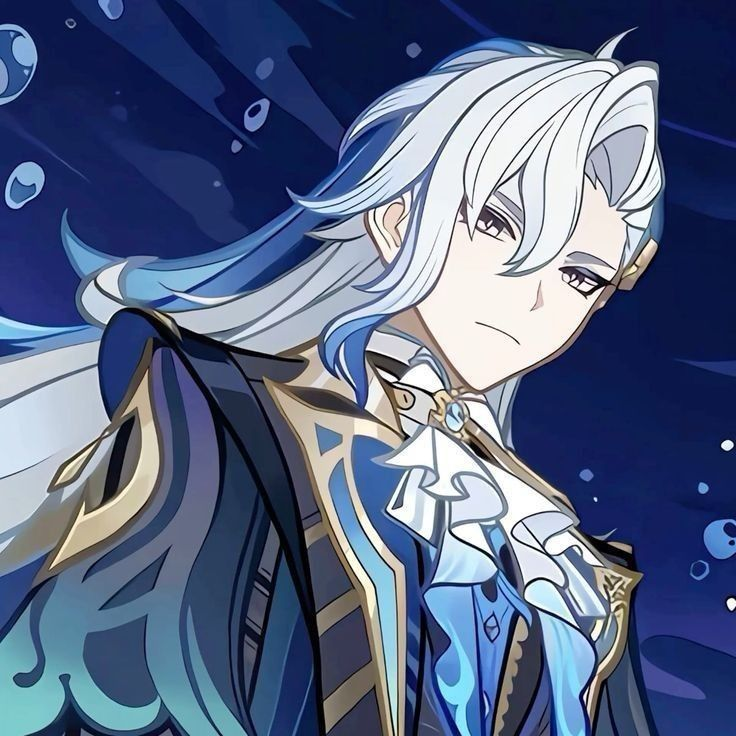
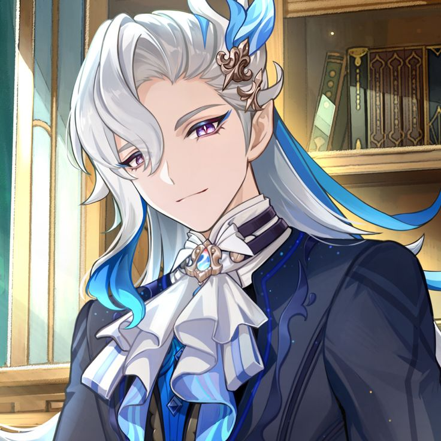
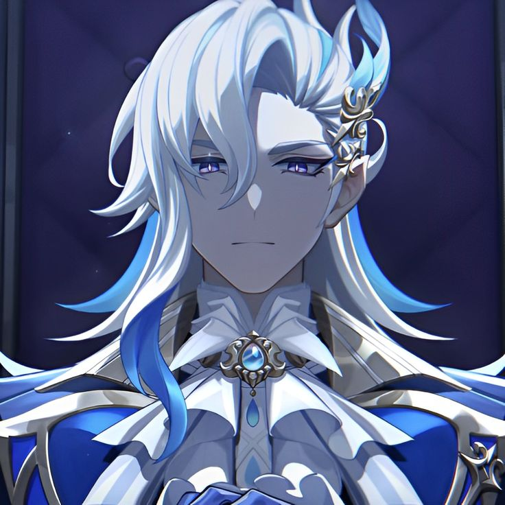
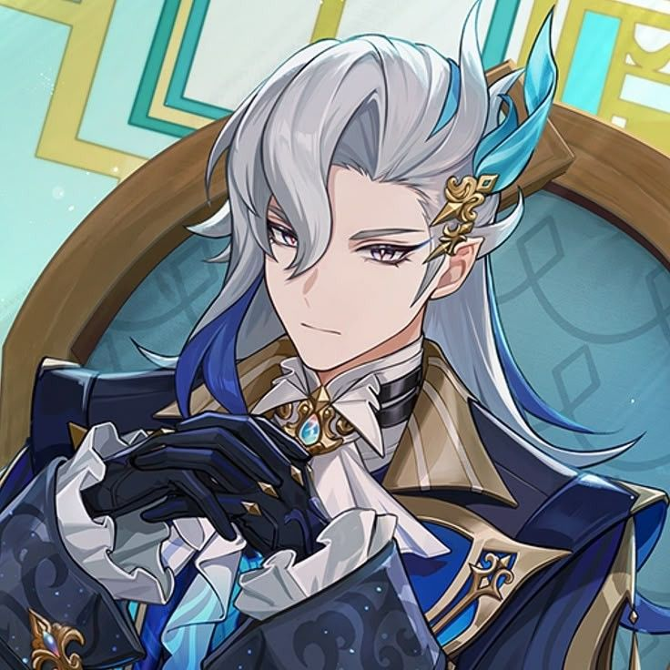
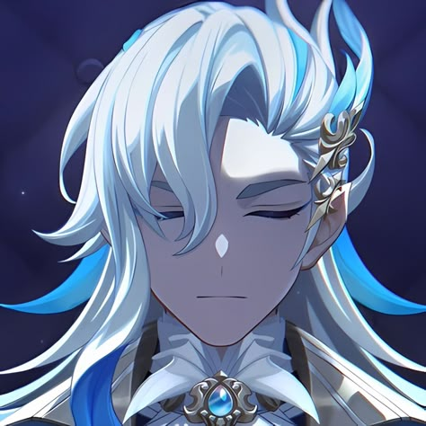
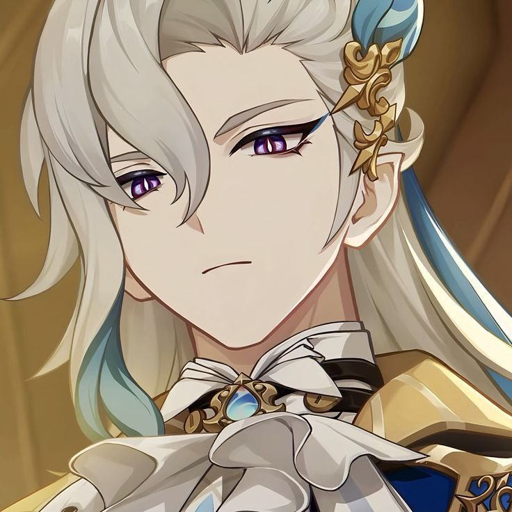
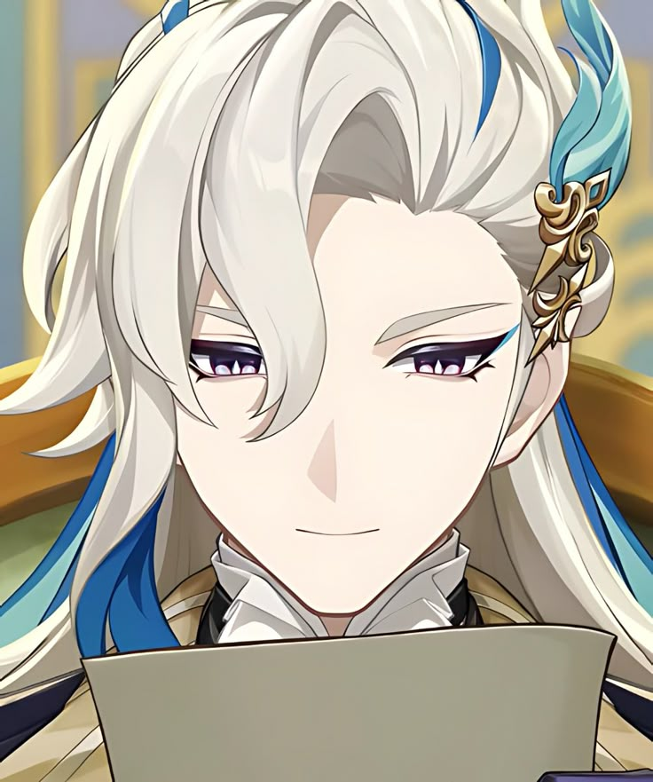
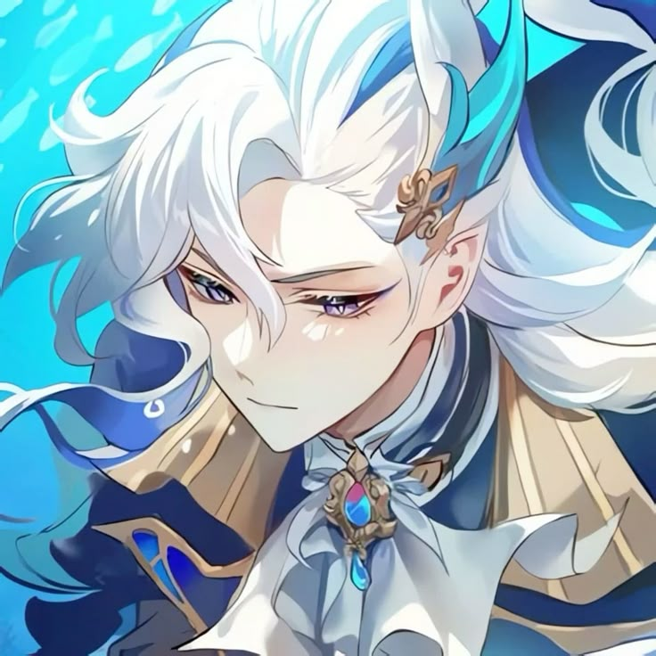

Neuvillette is a playable Pneuma-aligned Hydro character in Genshin
Impact. Neuvillette is the Iudex of Fontaine, and the leader of the
Marechaussee Phantom. While Neuvillette upholds the rules of the court
with utmost reverence, he is quite aloof when dealing with human
emotions and often distances himself from the public eye. Despite his
human appearance, he is actually the Hydro Dragon and one of the Seven
Sovereigns. However, he did not obtain full dragonhood until the
events of Archon Quest Chapter IV: Act V - Masquerade of the Guilty
when the Hydro Archon Focalors returned the powers stolen by the
Heavenly Principles from the Sovereigns back to him.
In accordance to his role as the Chief Justice, Neuvillette takes the
court and trials very seriously, handing out verdicts with
impartiality. He is notably perceptive, being able to hear Paimon's
whispers and is able to deduce the additional details from the
evidence provided to him during a trial. He utilizes the Oratrice
Mecanique d'Analyse Cardinale to make the final decision, honoring its
request regardless of his own feelings on the matter as per protocol.
Due to his position and ties to the Hydro Archon, he is popular among
Fontaine's people as a symbol of justice and honor. As a member of the
Seven Sovereigns, Neuvillette is unfamiliar with human customs and
feelings, using the court to help him process and understand them. He
rarely spends his time out in public, as he does not enjoy unwanted
attention, and in the few times he speaks to humans, he appears to be
aloof, though honest in his words. However, when interacting with
Melusines, he is extremely friendly, seen as the ideal father by them;
likewise, he is fiercely protective of them, considering them the
pride of Fontaine and investigating matters himself should he hear of
a Melusine being bullied or threatened. This stems from his failure to
protect his friend and subordinate, Carole, when she was driven to
death due to Fontainian's prejudice, and Neuvillette being forced to
sentence his other friend, Vautrin, for carrying out a revenge killing
for Carole, he had since resolved to prevent such tragedy from
happening ever again. When he was initially reincarnated, Neuvillette
was left with many questions about himself, leading to him accepting a
position as the Iudex. His time overseeing trials led him to
experience a plethora of human experiences and emotions, which was
secretly prepared by Focalors in the hopes that his newfound
perception would save the people of Fontaine from a looming prophecy
that would exterminate them. Upon learning the full extent of
Focalors' deception, he admitted that she was devious and was both
saddened and shocked by her self-sacrifice. Indeed, having seen
humanity positively, Neuvillette used his fully restored powers to
save the people and left aside fragments of his power in the form of
Visions for those worthy of them. Neuvillette opposes the Heavenly
Principles, and by extension The Seven, as they usurped the authority
of the Dragons that once ruled Teyvat. This appears to be more of a
professional standpoint than a personal matter, as he expresses
surprise at the current status of some Archons, like Barbatos, while
respecting Lesser Lord Kusanali for her duties. Neuvillette enjoys
water and is an avid taster, being able to discern the properties of
where the water came from and how it's prepared; as a result, this
also extends to him liking food with plenty of sauce. He does not like
deep fried food and grilled food with no sauce, especially taking
great offence to Charcoal-Baked Ajilenakh Cakes.








Character Demo - "Neuvillette: Font of All Waters" | Genshin Impact